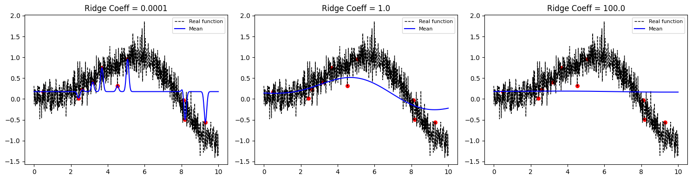
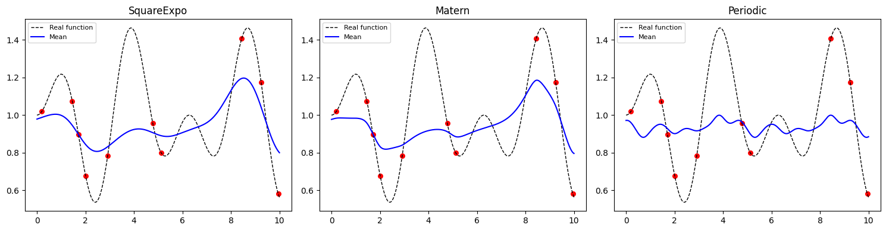
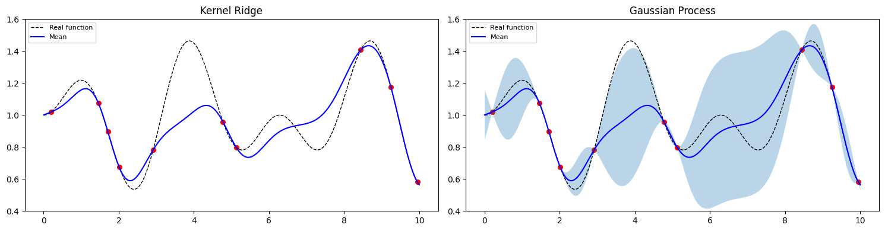

Kernel Ridge Regression examples
Exploring the influence of the regularization parameter in a context of a signal chirp function
Show code cell source
Hide code cell source
import matplotlib.pyplot as plt
import sys
import numpy as np
sys.path.insert(0, '..')
from kernax.stationary import SEKernel
import KRR
import random
kernel = SEKernel(1.0)
X = np.linspace(0, 10, 1000).reshape(-1, 1)
#Signal chirp, the function is interesting because we will really see the influence
# of the ridge coefficient
y = np.sin(0.5*X.ravel() **2 / 10) + 0.2 * np.random.randn(X.shape[0])
rng = np.random.RandomState(1)
training_indices = rng.choice(X.shape[0], size=10, replace=False)
X_train, y_train = X[training_indices], y[training_indices]
RidgeValues = [1e-4,1.0,100.0]
X_plot = np.linspace(0, 10, 400).reshape(-1,1)
fig, axes = plt.subplots(1, 3, figsize=(15, 4))
for (a,ridge), ax in zip(enumerate(RidgeValues),axes):
KRRClass = KRR.KRR(X_train, Kernel=kernel, RidgeCoeff=ridge, NormalizeObs=True).fit(y_train)
PosteriorFunction = KRRClass.predict(X_plot)
ax.plot(X, y, 'k--', lw=1, label='Real function')
x_plot = X_train.ravel().astype(float)
y_plot = y_train.ravel().astype(float)
ax.scatter(x_plot, y_plot, c='red', s=30)
ax.plot(X_plot, PosteriorFunction, 'b-', label='Mean')
ax.set_title(f'Ridge Coeff = {ridge}')
ax.legend(fontsize=8)
plt.tight_layout()
plt.show()

Simple comparison of the behavior of Square Exponential, Matern, and Periodic Kernel
Show code cell source
Hide code cell source
import matplotlib.pyplot as plt
import sys
sys.path.insert(0, '..')
from kernax.stationary import SEKernel, Matern32Kernel, PeriodicKernel
import numpy as np
import KRR
kernels = {
'SquareExpo': SEKernel(1.0),
'Matern': Matern32Kernel(1.0),
'Periodic': PeriodicKernel(1.0, 1.0, 5.0)
}
X = np.linspace(0, 10, 200).reshape(-1, 1)
y = 1 + 0.5*np.sin(0.5*X.ravel()) * np.sin(2*X.ravel())
rng = np.random.RandomState(1)
#We choose randomly the observations
training_indices = rng.choice(np.arange(y.size), size=10, replace=False)
X_train, y_train = X[training_indices], y[training_indices]
X_plot = np.linspace(0, 10, 400).reshape(-1,1)
fig, axes = plt.subplots(1, 3, figsize=(15, 4))
for ax, (name, kern) in zip(axes, kernels.items()):
KRRClass = KRR.KRR(X_train, Kernel=kern,RidgeCoeff=1.0,NormalizeObs=True).fit(y_train)
#Prediction of the points produced by X_Plot
PosteriorFunction = KRRClass.predict(X_plot)
ax.plot(X, y, 'k--', lw=1, label='Real function')
ax.scatter(X_train, y_train, c='red', s=30)
ax.plot(X_plot, PosteriorFunction, 'b-', label='Mean')
#Normalization
ax.set_title(name)
ax.legend(fontsize=8)
plt.tight_layout()
plt.show()

Comparison between a KRR and a GP
Show code cell source
Hide code cell source
import matplotlib.pyplot as plt
import sys
sys.path.insert(0, '..')
from kernax.stationary import SEKernel, Matern32Kernel, PeriodicKernel
import numpy as np
import KRR, GP
kern = SEKernel(1.0)
X = np.linspace(0, 10, 200).reshape(-1, 1)
y = 1 + 0.5*np.sin(0.5*X.ravel()) * np.sin(2*X.ravel())
rng = np.random.RandomState(1)
#We choose randomly the observations
training_indices = rng.choice(np.arange(y.size), size=10, replace=False)
X_train, y_train = X[training_indices], y[training_indices]
X_plot = np.linspace(0, 10, 400).reshape(-1,1)
fig,(ax1, ax2) = plt.subplots(1, 2, figsize=(15, 4))
LimitY = (0.4,1.6)
ax1.set_ylim(LimitY)
ax2.set_ylim(LimitY)
KRRClass = KRR.KRR(X_train, Kernel=kern,RidgeCoeff=1e-5,NormalizeObs=True).fit(y_train)
y_plot = 1 + 0.5*np.sin(0.5*X_plot.ravel()) * np.sin(2*X_plot.ravel())
#Prediction of the points produced by X_Plot
PosteriorFunction = KRRClass.predict(X_plot)
ax1.plot(X_plot, y_plot, 'k--', lw=1, label='Real function')
ax1.scatter(X_train, y_train, c='red', s=30)
ax1.plot(X_plot, PosteriorFunction, 'b-', label='Mean')
#Normalization
ax1.set_title('Kernel Ridge')
ax1.legend(fontsize=8)
gp = GP.GP(Kernel=kern,Alpha=1e-5,NormalizeObs=True).fit(X_train,y_train)
#Prediction of the points produced by X_Plot
meanGP, stdGP = gp.predict(X_plot,Return_std=True)
ax2.plot(X_plot, y_plot, 'k--', lw=1, label='Real function')
ax2.scatter(X_train, y_train, c='red', s=30)
ax2.plot(X_plot, meanGP, 'b-', label='Mean')
ax2.fill_between(X_plot.ravel(), meanGP-1.96*stdGP, meanGP+1.96*stdGP, alpha=0.3)
#Normalization
ax2.set_title('Gaussian Process')
ax2.legend(fontsize=8)
plt.tight_layout()
plt.show()
